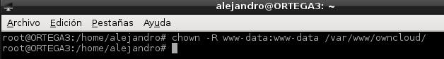
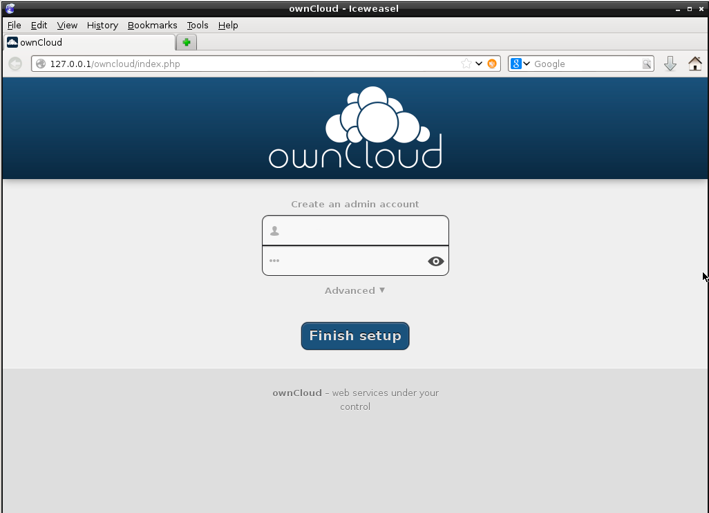
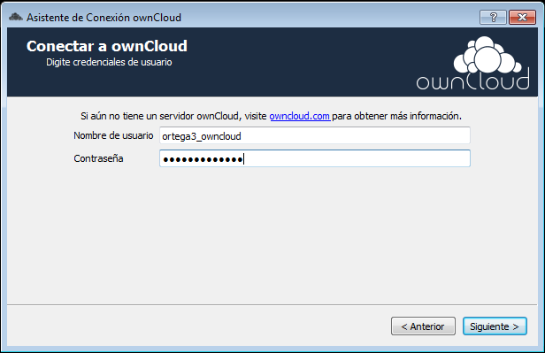

- Módulo: Fundamentos de Hardware
- Título del trabajo: A3: Almacenamiento en la nube
- Componentes del grupo: Alejandro Ortega Freire
- Curso Académico: 2013/2014
- Fecha de entrega: 22 de abril de 2014
1.- Introducción - OWNCLOUD
NOTA 1:
- Últimamente se están poniendo de moda servicios de almacenamiento y sincronización de ficheros en la nube, entre los que destacan Dropbox y Google Drive. Ambas soluciones son cerradas.
- Dentro de las soluciones libres disponemos de ownCloud, por el que parece que apuesta Suse, y que utilizan varios proveedores para ofrecer servicios de almacenamiento en la nube con un modelo de negocio freemium, como son OwnCubey GetFreeCloud.
- Las fuentes están disponibles para poder instalarlo en máquinas propias o alquiladas, así como clientes de sincronización para Windows, Linux, Android y próximamente para iOs y Mac.
OwnCloud es una aplicación libre que permite el almacenamiento en línea y aplicaciones en línea - cloud computing. En la presente práctica se crea un servidor de ownCloud en una máquina con SO Debian 7 y se comprueba el acceso a partir de dos máquinas clientes, una con SO Windows, y otra con distribución GNU/Linux.
Para ello se emplean las siguientes Máquinas Virtuales (MV):
- MV1 con SO Debian 7 con dirección IP 172.16.108.11 y nombre ORTEGA3. ESTA MÁQUINA SERÁ EL SERVIDOR OWNCLOUD.
- MV2 con SO Debian 7 con dirección IP 172.16.108.111 y nombre ORTEGA3B. ESTA MÁQUINA SERÁ UNO DE LOS CLIENTES OWNCLOUD.
- MV3 con SO Windows 7 con dirección IP 172.16.108.211 y nombre ORTEGA2. ESTA MÁQUINA SERÁ UNO DE LOS CLIENTES OWNCLOUD.
 Principio del punto 1 | Fin del punto 2 |
Principio del punto 1 | Fin del punto 2 |  Índice
Índice
2.- Servidor ownCloud (Debian 7)
2.1- Prerrequisitos
Se parte de una distribución Debian 7. ownCloud necesita 2 tipos de paquetes para funcionar correctamente, los principales y los opcionales, que en este caso son muy recomendables y permiten mayor flexibilidad a la hora de configurar el servidor en la nube.
2.2- Instalación de los paquetes principales
Los paquetes principales básicamente son para montar el servidor web Apache y el intérprete de paginas PHP. Para su instalación se utiliza el siguiente comando:
- apt-get install apache2 php5 php5-gd php-xml-parser php5-intl
Imagen 1: Instalación del servidor Apache y el intérprete PHP.
2.3- Instalación de los paquetes opcionales
Para su instalación se utiliza el siguiente comando:
- apt-get install php5-sqlite php5-mysql smbclient curl libcurl3 php5-curl
Imagen 2: Instalación de los paquetes opcionales.
2.4- Descargar el paquete ownCloud e instalarlo
- Se procede a la descarga en la máquina del paquete disponible de ownCloud mediante el comando wget.
- wget http://download.owncloud.org/community/owncloud-5.0.11.tar.bz2
Imagen 3: Descargar el paquete ownCloud.
- Con el comando tar se desempaqueta y descomprime el paquete descargado en el punto anterior.
- tar -xjf owncloud-5.0.11.tar.bz2
Imagen 4: Desempaquetar y descomprimir el paquete descargado.
- Seguidamente, se copia el paquete ya descomprimido, dentro del servidor web Apache en el directorio /var/www mediante el comando cp.
Imagen 5: Copiar el contenido del paquete en /var/www.
2.5- Establecer los permisos de directorio
- Se establecen los permisos de directorio. Se hace propietario del directorio copiado (/var/www/owncloud/) al usuario y grupo www-data mediante el comando chown.
- chown -R www-data:www-data /var/www/owncloud/

Imagen 6: Establecer los permisos del directorio /var/www/owncloud.
2.6- Activar el fichero .htaccess y mod_rewrite en Apache
- En nuestra distribución Debian 7, se hará con el comando a2enmod.
Imagen 7: Activar el fichero .htaccess y mod_rewrite.
- Comprobar que en el fichero /etc/apache2/sites-enabled/000-default del directorio virtual /var/www/ tenemos la opción AllowOverride establecida como All.
- nano /etc/apache2/sites-enabled/000-default
Imagen 8: Fichero /etc/apache2/sites-enabled/000-default.
- Reiniciar el servidor apache con el comando restart.
Imagen 9: Reiniciar el servicio apache.
2.7- Finalizar la instalación
- Desde un navegador web se introduce la dirección de nuestro servidor ownCloud de la siguiente manera:
Imagen 10: Acceder a la nube a través de servidor web.

Imagen 11: Accediendo a la nube por primera vez.
- Ahora se indica un nombre de usuario (ortega3_owncloud) y una contraseña (administrador) para el administrador del servidor, y se pulsa sobre el botón Finish Setup (Completa la instalación).
Imagen 12: Crear la cuenta del administrador del servidor.
2.8- Entrando por primera vez en Ownclud
- Una vez finalizada la instalación, el sistema ownCloud da la bienvenida.
Imagen 13: Primer acceso a ownCloud.
- La pantalla principal del sistema ownCloud será la siguiente:
Imagen 14: Primer acceso a ownCloud.
- En la que se observan los módulos que se pueden utilizar:
- Files (Archivos)
- Music (Música)
- Calendar (Calendario)
- Contacts (Contactos)
- Pictures (Imágenes)
- Desde aquí ya se podrán subir o crear archivos/directorios.
2.9- Elementos básicos de la interfaz de ownCloud
Imagen 15: Elementos básicos de la interfaz.
Principio del punto 2 | Fin del punto 3 | Índice
3.- Clientes ownCloud
3.1- Cliente ownCloud (Windows 7) - MV ORTEGA2
3.1.1.- Instalar aplicación cliente de ownCloud para Windows
Imágenes 16-19: Instalación del cliente de ownCloud en Windows 7.
3.1.2.- Establecer conexión con el servidor y sincronizar
- Acceder a la aplicación mediante el acceso directo creado.
Imagen 20: Acceso directo.
- Conectar con el servidor ownCloud a través de su dirección. Dado que el servidor es la MV1 su dirección será la siguiente: http://172.16.108.11/owncloud/
Imagen 21: Conexión con el servidor.
- Se solicita un usuario y contraseña. En este caso se usa el administrador (ortega3_owncloud) que, de momento, es el único creado con acceso al servidor ownCloud.

Imagen 22: Usuario y contraseña.
Imagen 23: Directorio que se sincronizará con el repositorio ownCloud.
Imagen 24: Acceso a través del cliente ownCloud de Windows.
Imagen 25: Sincronización con el servidor.
- Ahora se puede acceder al almacenamiento alojado en el servido a través de la carpeta local en Windows (C:\Users\alejandro\ownCloud) o a través de un navegador web (http://172.16.108.11/owncloud/).
Imagen 26: Carpeta local.

Imagen 27: Acceso por navegador web.
3.2- Cliente ownCloud (Debian 7) - MV ORTEGA3B
3.2.1.- Instalar aplicación cliente de ownCloud para Debian 7
- Añadir repositorios de ownCloud para Debian 7 e instalar según lo indicado en su página web.
Imágenes 28-32: Instalación owncloud-client en Debian 7.
3.2.1.- Establecer conexión con el servidor y sincronizar
- Acceder a la aplicación mediante el acceso creado en el inicio.
Imagen 33: Acceso al cliente de owncloud instalado.
- Conectar con el servidor ownCloud a través de su dirección. Dado que el servidor es la MV1 su dirección será la siguiente: http://172.16.108.11/owncloud/
Imagen 34: Conexión con el servidor.
- Se solicita un usuario y contraseña. En este caso se usa el administrador (ortega3_owncloud) que, de momento, es el único creado con acceso al servidor ownCloud.
Imagen 35: Usuario y contraseña.
Imagen 36: Directorio que se sincronizará con el repositorio ownCloud.
Imagen 34: Acceso a través del cliente ownCloud de Debian.
- Ahora se puede acceder al almacenamiento alojado en el servido a través de la carpeta local en Debian (/home/alejandro/ownCloud) o a través de un navegador web (http://172.16.108.11/owncloud/).
Imagen 35: Carpeta local.
Imagen 36: Acceso por navegador web.
Principio del punto 3 | Fin del punto 4 | Índice
4.- Ejemplos
- Se procede a crear directorios y ficheros de prueba en las tres máquinas para comprobar la sincronización entre las tres. Los ficheros/directorios creados son:
- MV1 - ORTEGA3 - SERVIDOR OWNCLOUD
- Directorio Prueba_DEB7_Servidor
- Archivo Prueba_DEB7_Servidor.txt
- MV2 - ORTEGA3B - CLIENTE OWNCLOUD
- Directorio Prueba_DEB7_Cliente
- Archivo Prueba_DEB7_Cliente.txt
- MV3 - ORTEGA2 - CLIENTE OWNCLOUD
- Directorio Prueba_W7_Cliente
- Archivo Prueba_W7_Cliente.txt
- Se accede al repositorio desde cada máquina y se comprueba la existencia en cada carpeta local de los archivos/directorios creados.
DEBIAN 7 - SERVIDOR OWNCLOUD
Imagen 37: Carpeta local en ORTEGA3 - SERVIDOR.
Imagen 38: Acceso por navegador web en ORTEGA3 - SERVIDOR.
WINDOWS 7 - CLIENTE OWNCLOUD
Imagen 39: Carpeta local en ORTEGA2 - CLIENTE.
Imagen 40: Acceso por navegador web en ORTEGA2 - CLIENTE.
DEBIAN 7 - CLIENTE OWNCLOUD
Imagen 37: Carpeta local en ORTEGA3B - CLIENTE.
Imagen 38: Acceso por navegador web en ORTEGA3B - CLIENTE.
Principio del punto 4 | Fin del punto 5 | Índice
5.- Conclusiones
ownCloud es una muy buena alternativa Open Source de almacenamiento en la nube y gratuita. Transforma nuestro servidor en un punto de almacenaje desde el que podremos intercambiar nuestros datos, integrarlo con otras aplicaciones o simplemente usarlo como aplicacion para el trabajo colaborativo.
Para ello la aplicación se basa en tres funcionalidades: sincronizar nuestros datos, acceder a ellos y poder compartirlos. Es, por lo tanto, una herramienta perfecta para reutilizar viejos equipos, dándoles una segunda vida y montar un servidor a semejanza de dropbox, box, sugasync,etc. pero propio, con un entorno web y de una manera muy sencilla.
Principio del punto 5 | Índice
Alejandro Ortega Freire 1ºASIR
Fundamentos de Hardware
 Enlace de descarga.
Enlace de descarga.